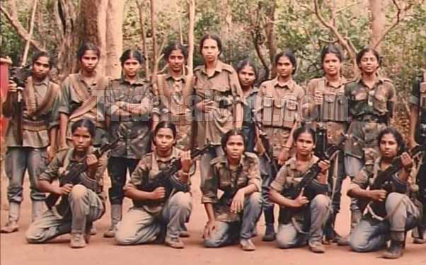

Janaki: Builder of a Network of ex-Fighters
Janaki: Builder of a Network of ex-Fighters
Jaffna Monitor hellojaffnamonitor@gmail.com 12 Janaki: Builder of a Network of ex-Fighters Janaki served as the administrative head of the regiment, holding a rank just below that of the special commander, Brigadier Thurga. Both Brigadier Thurga and her deputy, Colonel Mohana, were killed during the Battle of Anandapuram in April 2009. This devastating battle marked the near-collapse of the Sothiya Regiment, leaving the remaining female fighters scattered into small, disorganized groups. A t the center of these covert operations— manipulating former combatants and pushing the LTTE diaspora's agenda to incite instability in Sri Lanka, thereby endangering the hard-earned peace and stability of thousands of ex-fighters—stands Janaki, a pivotal figure in the LTTE's Sothiya Regiment. Janaki Brig. Thurga, commander of the Sothiya Regiment, with LTTE supremo Prabhakaran
Jaffna Monitor hellojaffnamonitor@gmail.com 13 After Thurga's death, Mathuram was appointed as the new special commander, but she too perished in the final days of the war. Throughout this chaos, Janaki remained at her post as the administrative head, maintaining her authority and influence within the regiment, even as it crumbled around her. Janaki, whose real name is Chithranjani (rpj;uQ;rdp), was born in Achchuveli. Her involvement with the LTTE began during the Indian Army's presence in Sri Lanka. Before officially joining the LTTE, she worked with the "Suthanthira Paravaigal" ("Birds of Freedom"), a group primarily comprised of students and women under the LTTE's political wing. This organization, composed of LTTE supporters and sympathizers, was not part of the formal military structure but played a vital role in assisting the movement. It was during this time that Janaki decided to become a full-time member of the LTTE in 1988, at the height of the conflict between the Indian Army and the LTTE. Janaki's military journey began with the fourth women's batch at Manal Aru, where she trained under the watchful eye of Sothiya (Michael Vasanthi)—a disciplined and highly skilled commander whose unwavering dedication to the cause left an indelible mark on her trainees. Tragically, Sothiya's life was cut short by illness, passing away on January 11, 1990. In recognition of her legacy, LTTE supremo Prabhakaran immortalized her by establishing the Sothiya Regiment on July 14, 1996. Cropped image from an LTTE song featuring Janaki, from the early 1990s Sothiya with her fellow fighters at Vidiyal Camp, in the Nithikaikulam forest, 1989

Jaffna Monitor hellojaffnamonitor@gmail.com 14 When the regiment was formed, Janaki officially enlisted, swiftly rising through the ranks as both a formidable fighter and an astute leader. Her battlefield prowess earned her respect among her peers, and her reputation grew with every mission. Credible sources affirm that Janaki played a crucial role in several key offensives, including the decisive battle at Elephant Pass, where she showcased her tactical acumen and unyielding determination, solidifying her status as a force to be reckoned with on the frontlines. Janaki was widely recognized as a highly capable leader within the LTTE's administration. Credible sources state that she had a natural talent for managing people efficiently while fostering warm and friendly relationships with her colleagues. Her genuine kindness earned her the respect and trust of the female fighters, making her one of the most well-regarded figures within the organization. A former female fighter who served under Janaki fondly described her as "mf;fh rpf;fy; ,y;yhj Ms;" ("a leader without complications"). Similarly, a male fighter remarked, "She had no conflicts with us or the female fighters—she was a calm and balanced person." Thinesh Master: The Trusted Advisor Who Chose Loyalty Over Escape In 1992, Janaki married Thinesh Master (Sockalingam Senthilyogan), also known as 'Vedi' Thinesh, a senior LTTE member and one of Prabhakaran's most trusted military advisors. Thinesh, born on December 3, 1961, in Pannalai, Tellippalai, hailed from a well- educated and highly respected family. His father, Sockalingam, had served as Mannar's Assistant Government Agent (AGA), earning the family a solid reputation within their community. All of Thinesh's siblings went on to become distinguished professionals. His elder brother, the late Senthilkumar, was a doctor in London, Thinesh Master explaining a military strategy to LTTE guards in the late 1990s
Jaffna Monitor hellojaffnamonitor@gmail.com 15 while another brother, Dr. Senthill S. Mohan, is the Founder and CEO of Medcentre Health in Canada. His sisters also achieved notable success: one sister, Senthilvathana Sriskandarajah, holds a doctorate and resides in London, while another, Senthilkumari Gunachandran, an accomplished professional, lives in Australia. A credible source who studied with Thinesh Master told Jaffna Monitor that he was an intelligent student in his school days. However, like many youths of his generation, Thinesh's life was profoundly altered by the mindless July 1983 pogrom orchestrated by the then UNP government. The violence pushed countless Tamil youths toward militancy, seeking self-respect and justice. Thinesh was no exception—he abandoned his studies and, driven by the need to resist oppression, became a committed member of the LTTE. Thinesh was known for his English fluency and deep understanding of military strategy. Yet, like many within Prabhakaran's inner circle, he was expected to be a compliant "yes-man." In 1983, Thinesh underwent specialized explosives training under Indian officials in New Delhi, India. He later worked closely Sockalingam, former Assistant Government Agent (AGA) Thinesh Master (standing at the extreme right) with his siblings and relatives
Jaffna Monitor hellojaffnamonitor@gmail.com 16 with Anton Master, the head of the LTTE's military office. When Anton Master parted ways with the LTTE in 1988 after a fallout with Prabhakaran, Thinesh stepped into his role, officially taking over the leadership of the military office in 1990. Thinesh was also among the few trusted operatives who accompanied Prabhakaran on his secret return to Sri Lanka from India in 1987. As the war neared its bloody end, Thinesh had several chances to escape. However, he chose to stay by Prabhakaran's side, ultimately embracing death alongside him. His body was never recovered, fueling speculation among remnants of the LTTE that he may have surrendered and vanished into the ranks of the "disappeared." Thinesh Master with LTTE leader Prabhakaran (cropped from an LTTE propaganda video) Thinesh Master Thinesh Master on a battlefield
Jaffna Monitor hellojaffnamonitor@gmail.com 17 Yet, credible sources who worked closely with him offered a different account. According to them, Thinesh expressed a deep resolve to remain with Prabhakaran until the end. Given his expertise with explosives, these sources speculate that Thinesh may have detonated himself, leaving no trace behind—his final act of loyalty, reducing himself to unidentifiable fragments. In March 2009, as the war entered its devastating final phase, the ICRC sent a ship to Puthumathalan to evacuate injured civilians. Although Janaki's children—a girl and a boy—were not injured, she used her and her husband Vedi Thinesh's influence to secure their escape. She managed to have them included on the list of wounded evacuees, alongside her brother Aingaran—now residing in Australia—who posed as their father. As the LTTE crumbled in May 2009, Janaki moved into army- controlled territory. She openly identified herself as an LTTE leader and surrendered to the military. What followed was highly unusual—while most female LTTE leaders and fighters endured lengthy detention and harsh interrogations, Janaki's time in custody lasted less than six months. This stark contrast raised suspicions among former fighters and observers. Sources suggest that Janaki paid substantial bribes to key officials, ensuring her swift transfer from military custody to an IDP (Internally displaced people) camp. Once inside the camp, Janaki quietly orchestrated her escape. With the aid of bribery and corrupt officials, she acquired a passport and fled Sri Lanka, eventually making her way to Chennai. The Troubling Self-Centeredness of Janaki After fleeing Sri Lanka and starting anew in India, Janaki began her life in Chennai. A few years later, she relocated to one of the prestigious Villas, situated near the Anjanasutha Sri Yoga Anjaneya Swami Mantra temple in Kirugambakkam, Porur—a temple founded by renowned Tamil actor Arjun. She made this villa her home, a residence best described as independent and refined—not exactly opulent by high-end standards, yet far more comfortable than the average household in Chennai. Her children's education reflects the privileges she managed to secure. Janaki enrolled her son and daughter at Padma Seshadri Bala Bhavan (PSBB), an elite institution renowned for its rigorous academics and steep fees. Admission to PSBB is difficult, not only because of the high costs but also due to the influence needed to secure a spot. The school's alums list reads like a who's who of Indian success stories: Sundar Pichai, CEO of Google; A.R. Rahman, Thinesh Master (left) with his siblings in the mid-1970s
Jaffna Monitor hellojaffnamonitor@gmail.com 18 Oscar-winning composer; Naga Chaitanya, a leading Telugu actor; Ravichandran Ashwin, celebrated Indian cricketer; and Narayana Murthy, co-founder of Infosys, among others. Janaki's eldest daughter, who has the name of a female character from ancient Tamil literature, was once a classmate of Balachandran Prabhakaran, the son of LTTE leader Velupillai Prabhakaran, in Kilinochchi. She has pursued a career in medicine and currently works as a duty doctor for a multinational company. Credible sources indicate that she is also working toward an MD in psychology, adding yet another dimension to her accomplishments. Meanwhile, Janaki's son, whose name includes the word "Tamil," recently completed his B.Tech in Mechatronics, Robotics, and Automation Engineering in 2023 from the renowned Vellore Institute of Technology (VIT), Chennai campus. Enrolled in 2020 under roll number 20BMH1084, Janaki's son quickly distinguished himself through his academic and technical excellence. (For privacy reasons, we have chosen not to publish the names of Janaki's son and daughter.) On March 20, 2023, La Trobe University's Vice-Chancellor, Professor Theo Farrell, announced the winners of the Technology Infusion Grand Challenge in India. Among the standout participants was Team Tsars from VIT Chennai, who were crowned overall winners for developing an innovative product—a smart breathalyzer called SafenSober, designed to reduce alcohol-related two-wheeler accidents, addressing a major safety concern in India. Janaki's son was a key member of Team Tsars, where he showcased exceptional technical brilliance and dedication. Their project earned top honors at the award ceremony held on March 20, 2024, in New Delhi. As part of their prize, the team received an all-expense-paid, two-week mentorship at La Trobe University's campus in Melbourne, Australia. Team Tsars from VIT Chennai receiving an award from La Trobe University's Vice-Chancellor, Professor Theo Farrell (Janaki's son is on the extreme left – his face has been blacked out to conceal his identity).
Jaffna Monitor hellojaffnamonitor@gmail.com 19 Interestingly, Janaki's son, still holding Sri Lankan citizenship, recently returned to Sri Lanka on a temporary passport to finalize his travel documents for the upcoming trip to Australia. During this visit, however, Jaffna Monitor uncovered that he met with key members of Janaki's network, delivering speeches infused with Tamil nationalist rhetoric. He urged them to "work hard" for the cause—even though he himself was preparing for a luxurious mentorship in Melbourne and eyeing a possible master's degree at a prestigious university abroad. Those familiar with India's education system understand just how exorbitant private medical education and specialized degrees like Mechatronics, Robotics, and Automation Engineering can be—often costing crores of Indian rupees. Janaki managed to finance these staggering expenses, reportedly with support from her late husband Vedi Thinesh's siblings and through her own business ventures in Chennai. Janaki's Sources of Income According to credible sources, Janaki's primary source of income is linked to her close Dr. Senthill S. Mohan Online advertisement showing Dr. Subhathini Senthill Mohan consulting patients at Sri Ramachandra Medical Centre, Porur

Jaffna Monitor hellojaffnamonitor@gmail.com 20 connection with her brother-in-law, Dr. Senthill S. Mohan, the founder and CEO of Medcentre Health in Canada. An alumnus of Madras Medical College and Chennai Medical College, Dr. Senthill S. Mohan also served as a resident physician at the Batticaloa Teaching Hospital. He is a highly regarded consultant in the healthcare industry, having built an impressive career. After an early stint in cardiology (2000– 2001), he transitioned to emergency medicine, where he worked as an emergency physician in Canada for 14 years (2001–2015). In 2012, he founded Medcentre Health, a venture offering comprehensive healthcare services across the Greater Toronto Area (GTA). Sources reveal that medical tourism has become a cornerstone of Dr. Senthill's business model. Over the years, he has facilitated treatment for hundreds of patients from more than 20 countries, arranging world-class healthcare in India—primarily in Chennai— where costs are significantly lower than in Western countries. Even before Janaki settled in Chennai, Dr. Senthill had been referring patients to India for major medical procedures, leveraging the region's affordability and high-quality care. His wife, Dr. Subhathini Senthill Mohan—an MD, CCFP, and FCFP-certified family doctor and general practitioner—manages these business ventures. She frequently travels to India and, when in Chennai, consults patients at Sri Ramachandra Medical Centre, Porur. According to sources, Janaki now handles the logistics for these international patients, overseeing everything from accommodation to transportation. This arrangement has evolved into a highly profitable venture for her, as she meticulously orchestrates every aspect to ensure a seamless and comfortable experience for patients during their stay. This allows her to maintain a comfortable lifestyle while expanding her influence among Tamil Nadu's elite and beyond. In addition to her business ventures, Janaki has cultivated a network of powerful contacts in Chennai, building close ties with controversial, pro- LTTE politicians such as Nedumaran, Seeman, and Vaiko—figures who continue to wield significant influence in Tamil Nadu's political landscape. The Question of Betrayal "While Janaki ensured the best education for her children and secured them a comfortable, affluent life in Chennai, why is she now trying to use us for her pro-LTTE diaspora- sponsored agendas?" several former female LTTE fighters expressed their frustrations to Jaffna Monitor. One ex-fighter remarked bitterly, "For years, Janaki kept a low profile, staying silent and uninvolved. Now that her children are settled and thriving, she's suddenly rekindled her obsession with Tamil Eelam." These women acknowledged that it is natural for any mother to want the best for her children. "That's understandable," one fighter admitted. "She gave them a good education and built a secure life for them. But why should our children have to suffer, face imprisonment, or even die for these diaspora- sponsored schemes?" "It's perfectly fine that she ensured her children's bright future," another ex-fighter added. "But why did she manipulate us to serve the agendas of her sponsors? Why are we being treated as mere tools for these plans?" The fighters expressed deep frustration with Janaki's attempts to exploit them, especially after guaranteeing the safety and success of her own family. "We fought. We lost everything. All we want now is peace," one fighter
Jaffna Monitor hellojaffnamonitor@gmail.com 21 declared. "Why should we—or our children— pay the price for these diaspora-funded schemes? Haven't we lost enough already?" A former Sothiya Regiment LTTE fighter, her voice tinged with sadness, shared her account with Jaffna Monitor. "Janaki's husband, Thinesh Master's personal bodyguard, now lives in abject poverty," she revealed. In the LTTE, a 'bodyguard' wasn't merely tasked with protecting the leader. He was expected to serve the family in every possible way—washing clothes, cleaning the house, and even ferrying the children to and from school. It was more akin to being an unpaid servant than an elite protector. "This bodyguard devoted himself to Janaki's family and children, ensuring their safety and comfort," the former fighter recalled. "I personally saw him working in her home." Yet, after the war, his life unraveled into poverty. Despite Janaki's powerful connections and access to diaspora funds from pro-LTTE elements, she has never once extended a helping hand. "He gave everything to her family, but now, with all the influence and resources she possesses, she hasn't lifted a finger to support him," the former fighter lamented. Another former female LTTE leader shed light on what she described as Janaki's opportunistic behavior. She pointed out that Janaki's mother and her younger sister both live comfortably in Kilinochi, while other close relatives remain safe in Jaffna. The ex-fighter accused Janaki of ensuring her family's safety while using vulnerable former fighters to push her pro-LTTE diaspora agenda. "If Janaki were truly sincere, why wouldn't she involve her own mother, sister, or other relatives in these schemes?" she asked. "Deep down, she knows that their involvement would invite trouble. To avoid that risk, she shields them while exploiting us—those of us without any protection." "Janaki's attitude seems to be—' Who cares about the rest of us?'" the ex-fighter concluded bitterly. "If Janaki were truly sincere, why doesn't she involve her own mother, sister, or any of her close relatives in these schemes?" she asked, her voice heavy with frustration. "Deep down, she knows their involvement would invite trouble—trouble she's not willing to face. To avoid that risk, she keeps them shielded and safe, while exploiting us—the ones with no protection, no safety net. We're disposable to her, mere pawns in her game." Her tone sharpened, bitterness dripping from every word. "Janaki's attitude seems to be—'Who cares about the rest of us?' As long as she gets what she wants, we can suffer for all she cares." The ex-fighter's words cut deep, exposing the betrayal and abandonment that had simmered beneath the surface for years. She paused, her gaze distant, before delivering her final point with unwavering clarity. "Janaki knew it all along—Prabhakaran was the LTTE, and the LTTE was Prabhakaran. Without him, there is no LTTE, no structure, no cause left to hold on to. She knows that all too well. And yet, here she is, rekindling dead embers, using us to chase a dream that ended long ago. She's playing with our memories, reopening old wounds—not for justice, but to keep her Tamil Eelam fantasies alive—dreams we can no longer afford to follow." Her voice dropped into cold resolve. "In the end, it's not about us. It never was. We're just tools—used, discarded, and now summoned again to serve her agenda. And this time, she doesn't care if we shatter completely."